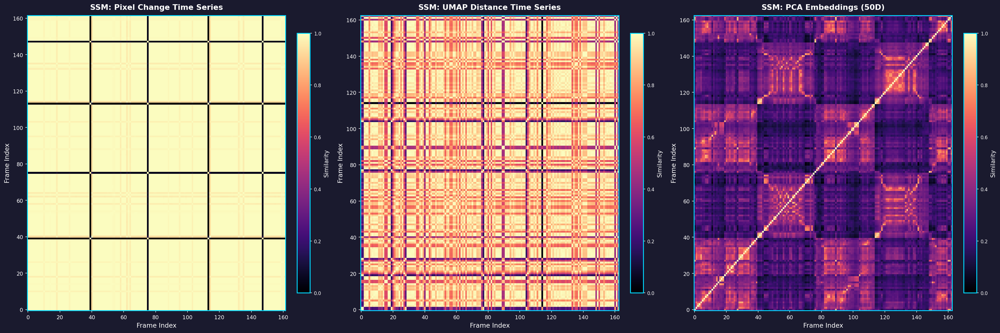

This proof of concept demonstrates the first three stages of the autonomous RPA workflow detection system: Image Processing, Efficient ML Techniques, and Pattern Detection. We process a short screen recording through the pipeline to show how raw video becomes actionable insight without requiring expensive VLM analysis at every step.
The pipeline starts with a screen recording of repetitive data entry work. Raw video contains thousands of frames, most redundant or low-information. Our goal is to identify where the user is actually working and filter out noise.
Frame Difference Analysis: We compute pixel-level changes between consecutive frames to detect motion. Frames with minimal change (< 0.01% pixels) are filtered out, reducing the dataset by 44% while preserving all meaningful activity. The filtered video (top-left) shows only frames where something actually happened.
Heat Map Generation: Morphological dilation and Gaussian blur create smooth heat maps showing motion concentration. This guides our attention to regions of interest.
Smart Cropping: The heat map informs a 224×224 square crop centered on activity. This focused view captures what the user is doing without the distraction of static UI elements.
Combined Overlay: All layers merge into a single view—original frame, motion heat map, and structural edges—providing rich input for downstream analysis.
Every frame's pixel change percentage becomes a data point in a time series, revealing the rhythm of user activity. Peaks indicate bursts of action, valleys show pauses. This simple signal already hints at repetitive patterns.
Raw pixels aren't enough—we need semantic understanding without the cost of running a VLM on every frame. Image embeddings convert visual information into high-dimensional vectors that capture meaning.
CLIP Embeddings: We extract 512-dimensional embeddings from both the full combined view and the smart crop. These vectors encode what's happening in each frame—no labels required.
UMAP Projection: PCA reduces embeddings to 50 dimensions, then UMAP projects to 2D for visualization. Watch similar frames cluster together organically. The system is learning to recognize UI states and workflows through pure observation.
The full frame embedding captures overall context—what application is open, what page the user is on. The trail shows how the user moves through different contexts over time.
The smart crop embedding focuses on the region of activity. This catches fine-grained actions—what specific UI element they're interacting with, what they're typing or clicking.
Concatenating both embeddings combines global context with local detail. K-means clustering then partitions this space into discrete states. Each color represents an abstract workflow state. The boundaries emerge naturally from the data—distinct clusters for different tasks, tight loops for repetitive actions, no supervision required.
Now we apply graph theory and signal analysis to detect repetitive behaviors without semantic labels.
We analyze patterns across multiple dimensions simultaneously. Time series analysis reveals temporal rhythms. Self-similarity matrices show repeated sequences. Spectral analysis detects periodicity. Each view captures a different aspect of repetitive structure.

Self-similarity matrices visualize how every frame compares to every other frame. Diagonal stripes indicate repeated sequences. Darker regions show similar states. Top-left: pixel-based SSM. Top-right: embedding distance SSM. Bottom-left: PCA-reduced SSM. Bottom-right: composite view. These patterns emerge purely from the data—no labels required.
We move from signals to structure. Clustering creates an abstract state machine, and cycle detection identifies repetitive workflows.
Clustering: K-means partitions the embedding space into 8 discrete states. Each cluster represents a recognizable UI configuration or action context. The system assigns abstract labels (State 0, State 1, etc.) without knowing what they mean semantically.
State Transitions: As the user works, we track their path through this abstract state machine. The graph visualization (bottom-right) shows states as nodes and transitions as edges, weighted by frequency.
The state machine reveals cycles—sequences of states visited repeatedly. The transition counter shows edges being traversed multiple times. These cycles are RPA candidates. We can now extract video segments corresponding to these cycles and send them to a VLM for semantic labeling, dramatically reducing the amount of expensive AI analysis required.
This proof of concept demonstrates stages 1-3 of the pipeline: Image Processing, Efficient ML, and Pattern Detection. We've taken a raw screen recording and identified repetitive patterns using only computer vision and unsupervised learning—no VLM required yet.
The remaining stages:
VLM Analysis: Send only the identified candidate cycles to a vision-language model for semantic labeling. Instead of analyzing 1,910 frames, we analyze perhaps 20-30 key sequences.
Semantic State Machine: VLM output transforms abstract states into meaningful labels ("Gmail Inbox", "Excel Data Entry", "Slack Message"). Variables are identified ("name", "date").
RPA Generation: An LLM converts the labeled workflow into pseudocode using a pre-built function library. The result is an executable RPA that can be tested, refined, and deployed.
The architecture works. Efficient curation makes expensive AI practical. The system learns by watching, not by being told. This is how we scale autonomous RPA to entire organizations.